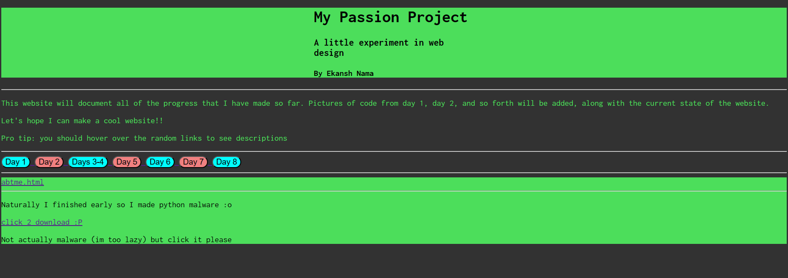

Remember the main page? Yeah, that got severely neglected. So, what better use of my time to completely revamp the whole thing?
I still got to learn some stuff, so it wasn't a complete waste of a day.
Here is an image of the current main page:
I have decided that I am going to leave the about me page as the basic skeleton. This is not due to laziness! I am doing this intentoinally so that I can pay homage to my roots and foundations. Also, it's a bit nostalgic, even though i am only 8 days into this thing...